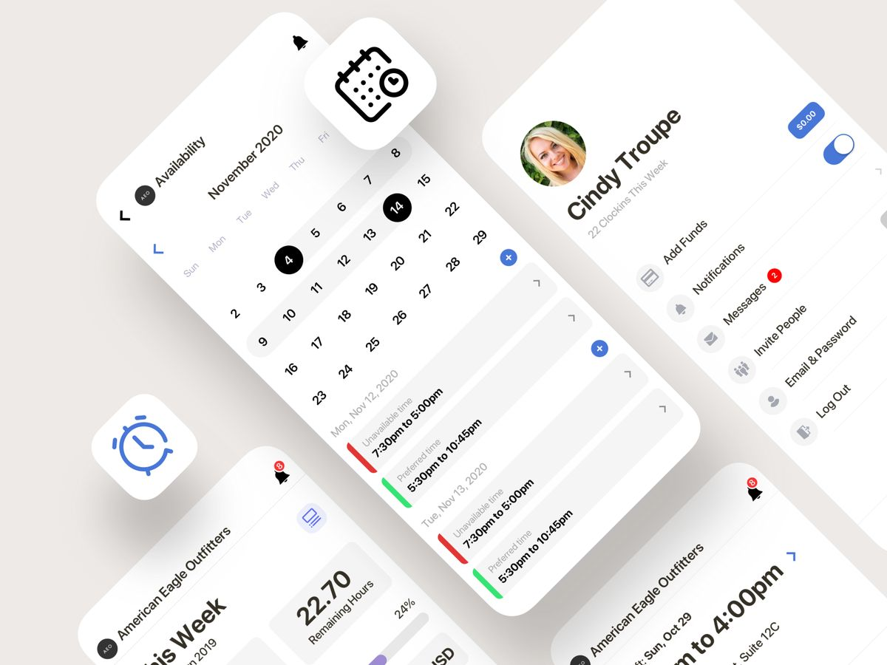
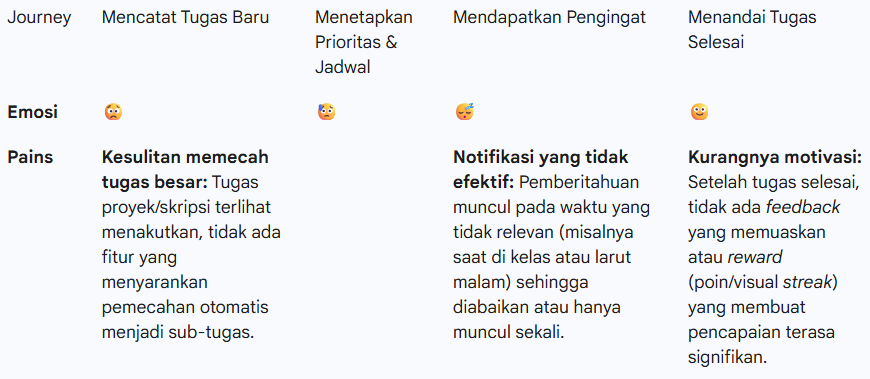
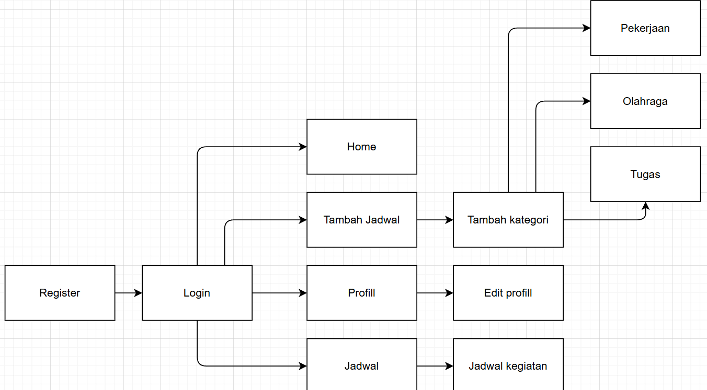
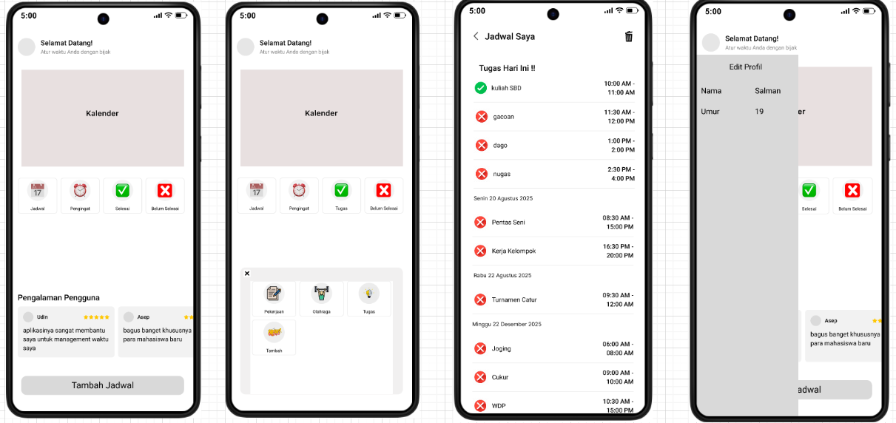

UI/UX Case Study
by Diva Galih Nayaka
Persyaratan Produk Awal
Tujuan Produk
kami berinisiatif untuk membuat solusi digital yang dapat membantu para mahasiswa dalam mengatur waktu. Dimana aplikasi ini dapat mencatat semua kegiatan yang ingin lakukan, memberikan notifikasi pengingat setidaknya 6 jam sebelum kegiatan dimulai, sehingga mereka tidak lagi lupa dengan semua kegiatan yang akan mereka kerjakan di esok hari.
Masalah
Permasalahan yang dihadapi adalah para mahasiswa sering kali terlambat mendatangi acara, kelas, lupa mengerjakan tugas, bahkan sampai lupa dengan kegiatan yang akan mereka lakukan di esok hari.
Challenge
Bagaimana merancang sebuah aplikasi yang dapat membantu para mahasiswa dalam mengatur waktu dengan baik, sehingga mereka dapat mengingat semua kegiatan yang akan mereka lakukan di esok hari tanpa merasa terbebani.
Target Pengguna
Mahasiswa aktif yang memiliki kesulitan dalam mengatur waktu dan sering kali lupa dengan kegiatan yang akan mereka lakukan di esok hari.
Goal Research
Mencari tahu faktor apa yang membuat mahasiswa sering lupa terhadap jadwal yang harus mereka lakukan. Mencari cara agar para mahasiswa tidak lupa terhadap kegiatan yang harus mereka lakukan.
Hypothesis
- Mahasiswa belum terbiasa dengan lingkungan kampus.
- Mahasiswa suka menunda-nunda tugas sehingga mereka lupa dengan tugas tersebut.
- Mahasiswa tidak tahu jika besok ada kegiatan yang harus mereka lakukan.
- Mahasiswa tidak memiliki catatan kegiatan yang harus mereka lakukan.
- Mahasiswa tidak memiliki pengingat kegiatan.
- Mahasiswa tidak memiliki aplikasi yang dapat membantu mereka mengatur waktu.
Persona
Target dalam aplikasi ini yaitu :
- Para mahasiswa yang ingin mengatur waktu mereka agar lebih tertata.
- Orang penting yang memiliki jadwal yang padat.
Framming the problem, clustering and filtering insight
Saya telah melakukan wawancara terhadap 3 orang mahasiswa/i
Telkom University yang berasal dari Bandung, Jakarta dan Medan.
Dari hasil wawancara tersebut, ternyata dari mereka masih banyak yang
masih terkendala dalam masalah membagi waktu, Berikut detailnya dapat dilihat
pada gambar di bawah.
Competitive analysis
Setelah melakukan wawancara saya juga melakukan desk Research , untuk mencari tahu apakah sudah pernah ada platform digital yang menawarkan solusi serupa
Dengan implementasi solusi ini, aplikasi manajemen waktu Anda tidak hanya berfungsi sebagai kalender digital, tetapi sebagai asisten pribadi yang proaktif dalam membantu mahasiswa mengatasi prokrastinasi dan masalah kelupaan yang spesifik.

Translate idea into Information architecture
Berikut adalah rancangan information architecture yang saya buat, dimana saya membuat 1 fokus fitur utama, yaitu Tambah jadwal , yang bertujuan untuk mencatat semua kegiatan yang ingin di lakukan oleh mahasiswa. Hal ini di lakukan demi kelancaran semua kegiatan.
Create user flow
Berikut adalah user flow yang saya buat untuk menggambaran proses atau langkah-langkah yang dilakukan oleh user, untuk mencapai tujuan mereka didalam apliaksi ini. Gambar dibawah adalah salah satu skenario user flow yang saya buat, ketika user untuk pertama kali daftar pada aplikasi ini, user bisa mencatat semua jadwal kegiatan yang ingin dia lakukan.

Wireframing
Selanjutnya ialah tahapan untuk memvisualisasikan semua insight yang telah didapat dari tahapan-tahapan sebelumnya hingga menjadi suatu tampilan, yang nantinya tampilan wireframe tersebut akan menjadi acuan untuk saya dalam membuat high-fidelity design nya. Berikut adalah beberapa tampilan wireframe yang telah saya buat:
Show prototype
Pada fase ini saya akan membuat prototype dari mockup yang telah saya buat menggunakan tools Figma. Untuk mencoba prototype silahkan mengunjungi link dibawah ini:
Fase terakhir ini merupakan ujicoba prototype yang telah saya buat ke pengguna dengan situasi yang mirip dengan realita yang akan dihadapi oleh user yang menggunakan aplikasi ini. Fase ini akan Memberikan ide-ide baru serta feedback dari pengguna yang dapat membantu saya untuk mengembangkan aplikasi ini menjadi lebih baik kedepannya.
Metode yang akan saya gunakan untuk fase ini adalah:
- Testing Prototype : Saya memberikan link prototype figma untuk di gunakan oleh user, saya tidak melakukan usabillity testing menggunakan maze ataupun meeting virtual dikarenakan adanya keterbatasannya waktu.
- User Feedback : Saya akan meminta pendapat partisipan, bagaimana pengalaman yang partisipan rasakan ketika sedang menggunakan prototype aplikasi tersebut.
Saya telah menguji kepada 3 orang partisipan, untuk mencoba prototype dari awal sampai akhir, untuk melihat apakah ada kendala yang dirasakan ketika menggunakan prototype ini, dan juga untuk melihat bagaimana impresi awal mereka terhadap solusi design yang saya tawarkan.
Kesimpulan Akhir
Setelah saya melaksanakan testing terhadap 5 partisipan, saya mendapatkan beberapa masukan dari partisipan berdasarkan apa yang mereka alami. Berikut ialah ringkasan mengenai apa saja yang dialami ketika mencoba prototype tersebut.
- Tidak ada warna yang membuat saya jenuh membuka aplikasi ini.
- Masih banyak yang tidak tahu cara untuk keluar aplikasi.
- Pertisipan tidak tau caranya memberikan feedback pada aplikasinya.
Dari beberapa feedback dan hasil testing tersebut, saya merasa aplikasi yang saya bikin masih banyak yang harus di tambahkan seperti fitur logout, dan feedback. Selain itu saya harus memikirkan warna yang cocok untuk aplikasi yang saya buat, saya ingin memberikan warna yang dapat memberikan kepuasan bagi pengguna aplikasi.
Demikian proses design yang telah saya lakukan, saya menyadari bahwa design yang saya tawarkan masih belum sempurna, masih terdapat banyak kekurangan, namun oleh karena itu proses development harus selalu berlanjut, agar dapat melakukan iterasi-iterasi berikutnya, dan dapat terus mengembangkan aplikasi Kelas Kita menjadi makin baik lagi kedepannya.